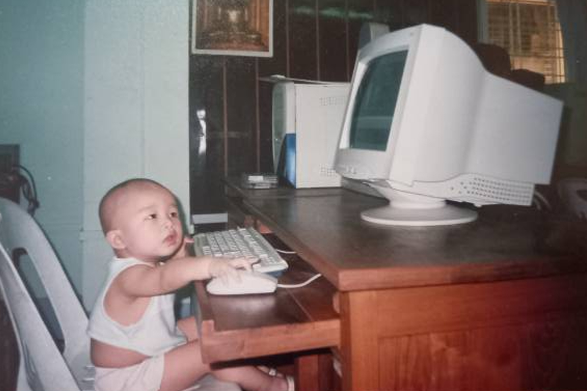
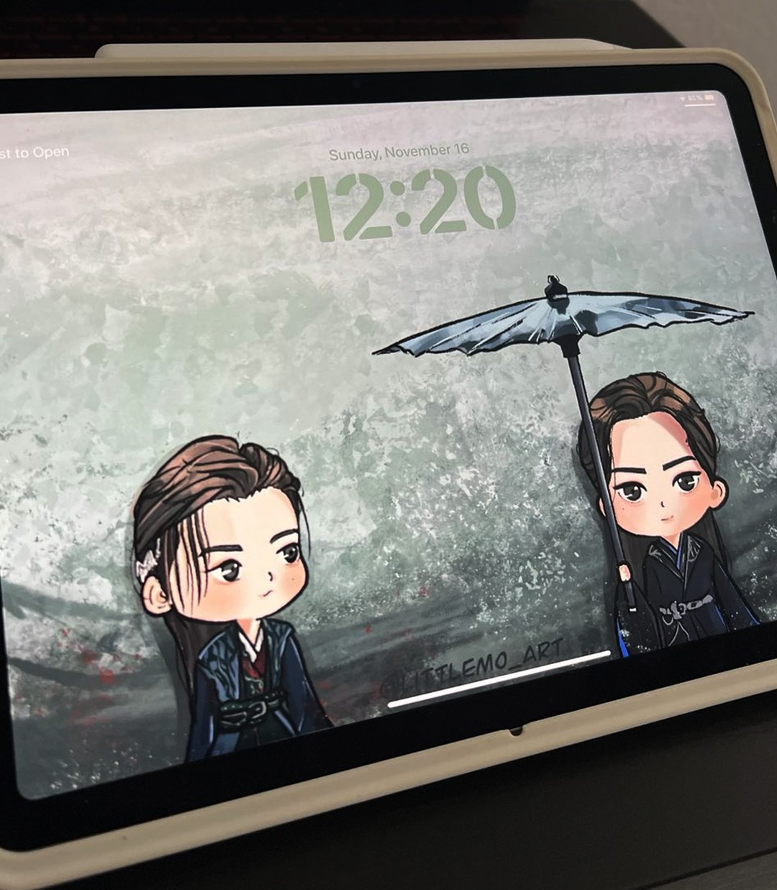
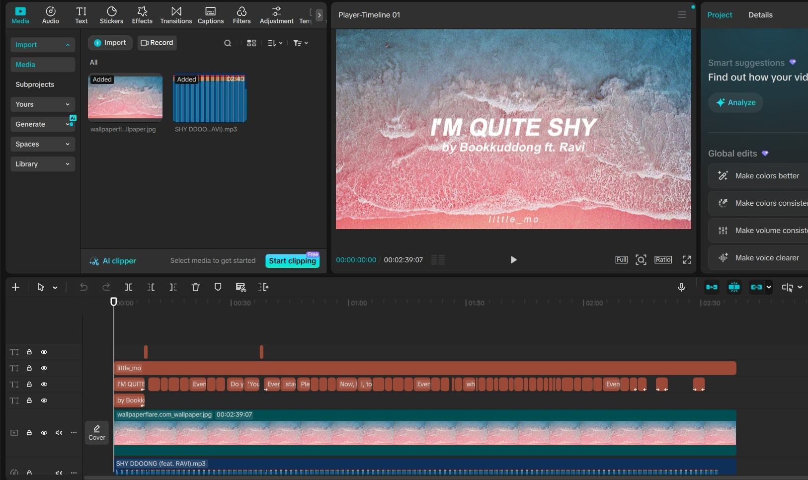
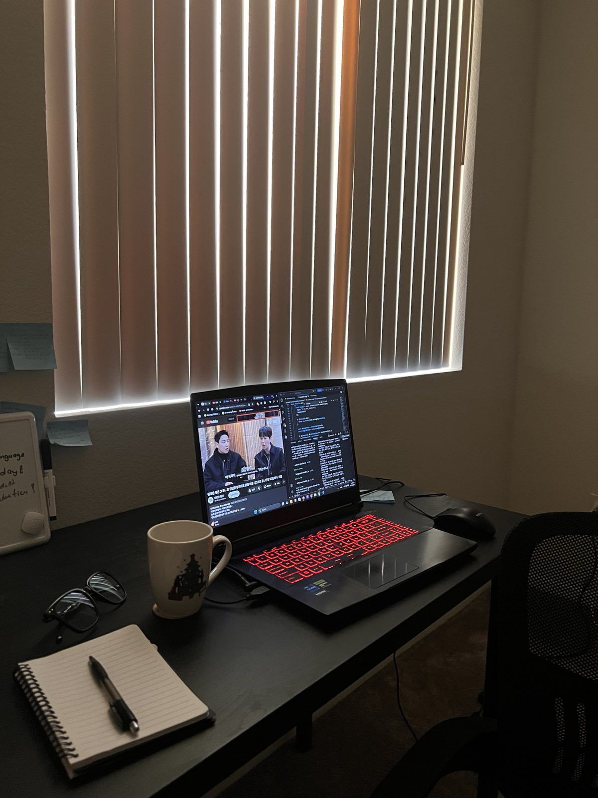
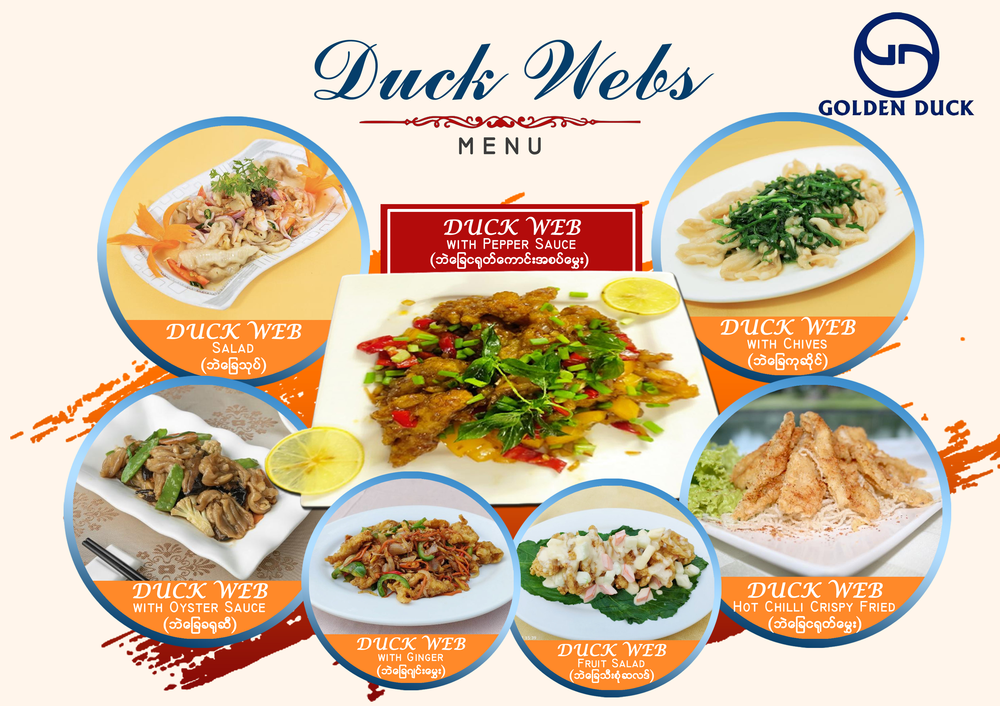

a little about
hi, i'm haneul :)
currently...
📍San Diego, California
🎓Cognitive Science: Design & Interaction @ UC San Diego
🎬Learning more about editing, film & production
💻Building this website and making stickers on the side
🎧Listening to Picheolin's new song "Party Rock Rock"

me + one very chunky computer
CIRCA WINDOWS XP
and i mean that pretty literally.
Downstairs was my family's computer shop. Upstairs was home.
The shop did everything from computer training and repairs to printing, and with my mom working downstairs from morning to night, I spent most of my childhood there too.
Some of my earliest memories are of sitting in front of those chunky Windows XP computers — playing games, drawing, exploring, listening to music, learning a very random collection of things, and eventually figuring out how to make things of my own.
AS I GOT OLDER
What started as playing around on a computer slowly became drawing, editing videos, designing, coding, taking photos, and whatever else caught my interest at the time.
I especially loved the things that could make me feel something — a song I couldn't stop replaying, a story I kept thinking about after it ended, a video I wanted to watch again, or a tiny detail that somehow made the whole thing memorable.
Eventually, I started wanting to make those things too.




at the end of it all
Some of the things I love most haven't changed my whole life. They've just made an ordinary day better, stayed with me, or given me something to look forward to.
I want to make something that can do that for someone else, too.
"Something that reaches someone in their little corner of the world
and gives them something to look forward to tomorrow :)"